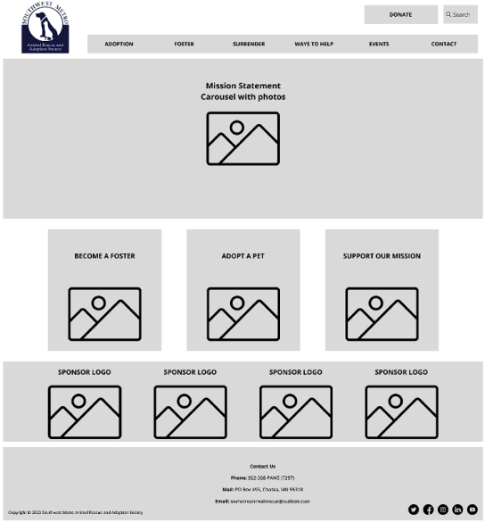
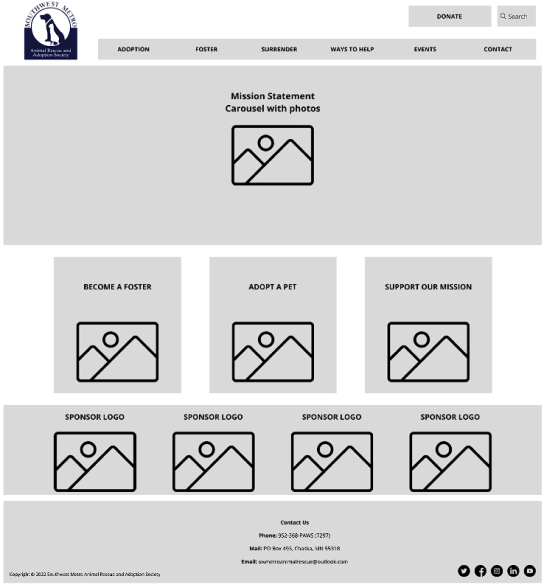
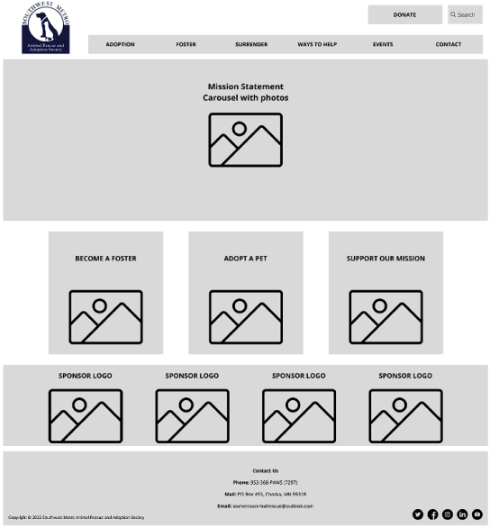

Southwest Metro Animal Rescue and Adoption Society
Southwest Metro Animal Rescue is a non-profit run completely by volunteers which serves the southwest metro area of the twin cities. Their mission is to match animals with loving families. One of the ways they do this is through volunteer fosters which keep animals in temporary homes and taken care of until they find their “forever home”.
Role
Role: UX/UI Designer
Timeline:3 weeks
Team: Gabriel Aguayo. Madison Porter, Jennifer Willeck
Meet Camilla.
Camilla is retired, and recently lost her family dog. She is community oriented, and passionate about giving back. She wants to help her community while also filling the void left by her beloved dog. While she’s not currently ready to commit to owning a pet, she’d like to ease herself back into pet ownership through fostering. This is where organizations like southwest animal rescue come into play.
While creating this user persona we were able better empathize with our users allowing us to to set the tone asn scope for this project.
After conducting a Heuristic Analysis and user tests we identified key opportunities fro improvement. Users found the site unorganized and confusing, there were many issues with usability and their mission and purpose was unclear, some even doubted the website was still active. The issue that most issues identified was the overly complicated fostering application process, which involved printing a 3 page pdf, filling in, and mailing it in.
We decided to focus on organizing the website and optimizing the usability of the fostering application process and fostering information.
To better explore Camila’s experience with our website redesign, I created a simple storyboard. This allowed the team to better empathize with our user.
With our User clear in mind we dived into our User Flow for our main area of focus: the Fostering Application and FAQ Page. We created a simple and easy flow covering all the main tasks our User would be able to do on our Foster page.

Following our data from our usability tests we created a simple homepage with a main hero image and 3 call to action buttons. In the Fostering Page we added a collapsible FAQ and simplified the 3 page pdf application form with simple form with key information and confirmation page to let the user know their application has been submitted. After more user testing and iterating me moved on to Hi-Fi prototyping, creating a new more accessible logo, breadcrumbs and new background color for the main nav bar.
Unsure of which color palette to follow w e turned to A/b testing top give some direction. Our testing showed a clear preference for the orange as our primary interaction color but also showed a preference for a second iteration of our footer, with more links organized in rows.
We focused on creating a design that is accessible, eye pleasing and friendly, while also keeping true to the sites mission statement. By adding plenty of animal pictures we hope to evoke an emotional reaction in the user that will lead to an animal finding their forever home.
 
